Sports car racing is a form of motorsport road racing that uses sports cars with two seats and enclosed wheels. The cars in question may be either purpose-built sports prototypes, which are the highest level in sports car racing; or grand tourers (GT cars) which, being based on road-going models, are considerably more common, but not as fast. Sports car races are, more often than not, endurance races run over particularly long distances or large amounts of time (generally between 6 and 24 hours), resulting in an emphasis on reliability and efficiency of the car and its drivers over outright car performance or driver skills. The FIA World Endurance Championship and IMSA SportsCar Championship are some of the best-known sports car racing series, and so is the GT World Challenge. Sports car racing is one of the main types of circuit auto racing, alongside open-wheel racing (such as Formula One and Indycar), touring car racing (such as BTCC and V8 Supercars, which is based on 'saloon cars' as opposed to the 'exotics' seen in sports cars) and stock car racing (such as NASCAR).
A hybrid of the purism of open-wheelers and the familiarity of touring car racing, sports car racing is commonly associated with the annual 24 Hours of Le Mans endurance race. First run in 1923, Le Mans is one of the longest-running motor races. Well-known historic sports car races include the Italian classics, the Targa Florio (1906–1977) and Mille Miglia (1927–1957), and the Mexican Carrera Panamericana (1950–1954). Most top-class sports car races focus more on endurance and strategy than pure speed or skills, and longer races usually involve complex pit strategies and regular driver changes. As a result, sports car racing is seen more as a team endeavour than an individual sport, with team managers such as John Wyer, Tom Walkinshaw, driver-turned-constructor Henri Pescarolo, Peter Sauber and Reinhold Joest becoming almost as famous as some of their drivers.
Success in sports car racing has helped build the prestige of various car manufacturers, such as Alfa Romeo, Aston Martin, Audi, Bentley, BMW, Chevrolet, Ferrari, Jaguar, Lamborghini, Lancia, Lotus, Maserati, Mercedes-Benz, and Porsche. These makers' top road cars have often been similar in engineering and styling to those raced. This close association with the exotic nature of the cars distinguishes between sports car racing and touring cars.
The 24 Hours of Daytona, 12 Hours of Sebring, and 24 Hours of Le Mans are considered the Triple Crown of endurance racing. Other crown-jewel sports car endurance races include Petit Le Mans, Nürburgring 24 Hours, Spa 24 Hours, Bathurst 12 Hour and Suzuka 1000km.
Formula One (F1) is the highest class of worldwide racing for open-wheel, single-seater formula racing cars run by Formula One Group and sanctioned by the Fédération Internationale de l'Automobile (FIA). The FIA Formula One World Championship has been one of the world's premier forms of motorsport since its inaugural running in 1950 and is often considered to be the pinnacle of motorsport. The word formula in the name refers to the set of rules all participant cars must follow. A Formula One season consists of a series of races, known as Grands Prix. Grands Prix take place in multiple countries and continents on either purpose-built circuits or closed roads.
A points scoring system is used at Grands Prix to determine two annual World Championships: one for the drivers, and one for the constructors—now synonymous with teams. Each driver must hold a valid Super Licence, the highest class of racing licence the FIA issues, and the races must be held on Grade One tracks, the highest grade rating the FIA issues for circuits.
Formula One cars are the world's fastest regulated road-course racing cars, owing to high cornering speeds achieved by generating large amounts of aerodynamic downforce, most of which is generated by front and rear wings, as well as underbody tunnels. The cars depend on electronics, aerodynamics, suspension, and tyres. Traction control, launch control, automatic shifting, and other electronic driving aids were first banned in 1994. They were briefly reintroduced in 2001 but were banned once more in 2004 and later 2008.
With the average annual cost of running a team—e.g., designing, building, and maintaining cars; staff payroll; transport—at approximately £193 million as of 2018 (though the cost cap stands at US$215 million), Formula One's financial and political battles are widely reported. The Formula One Group is owned by Liberty Media, which acquired it in 2017 for US$8 billion. The United Kingdom is the hub of Formula One racing, with six out of the eleven teams based there.
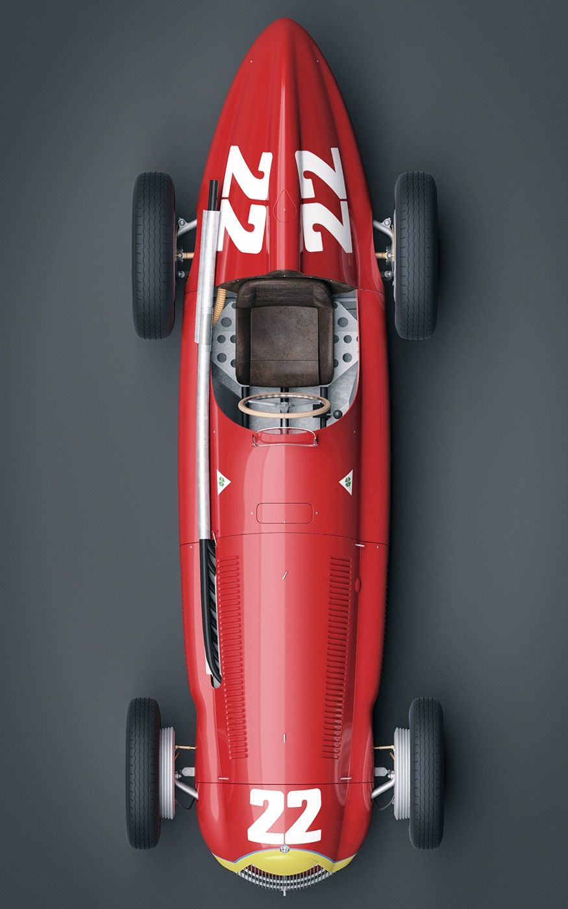
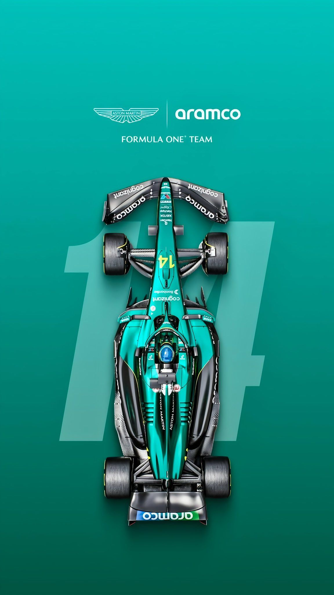
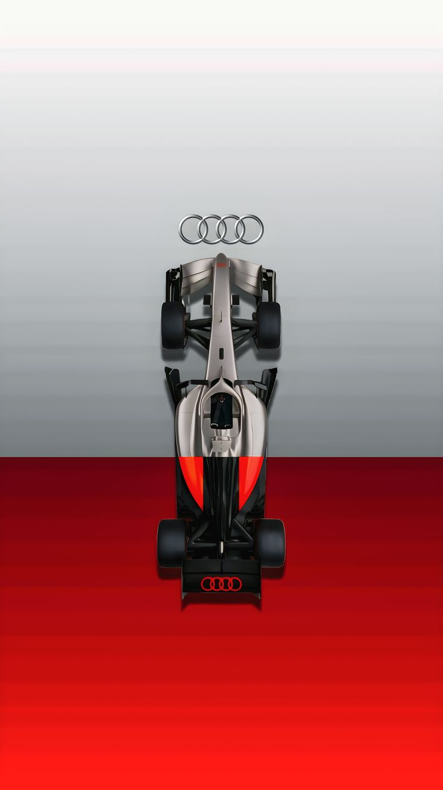 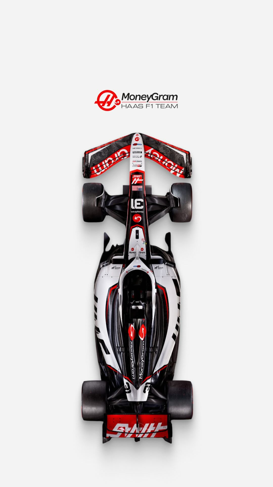
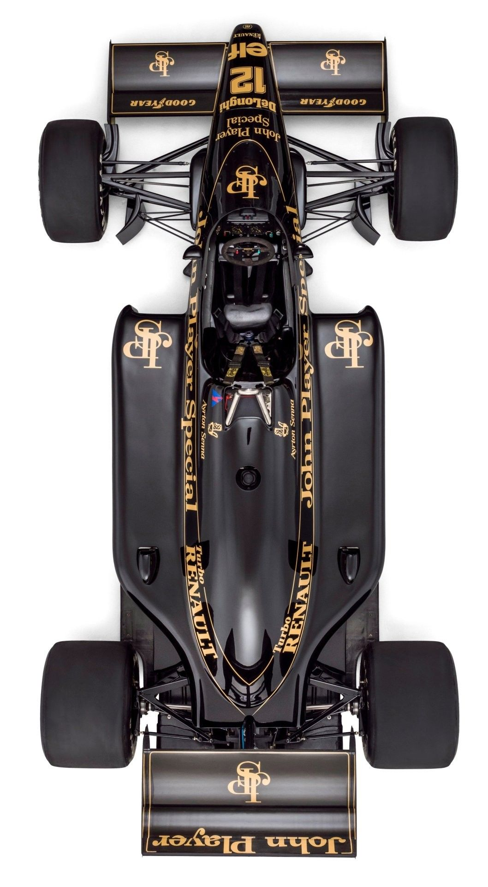
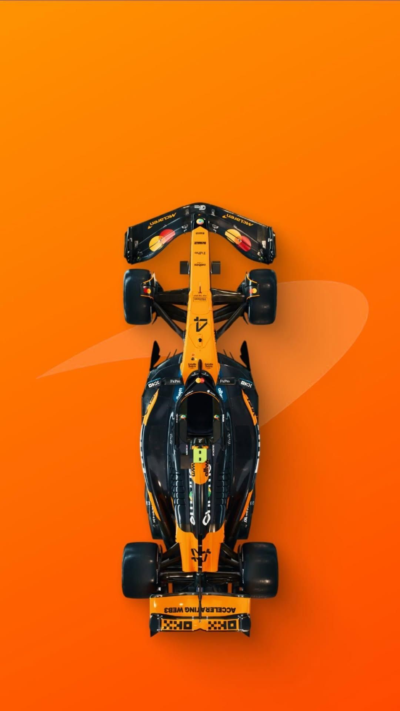
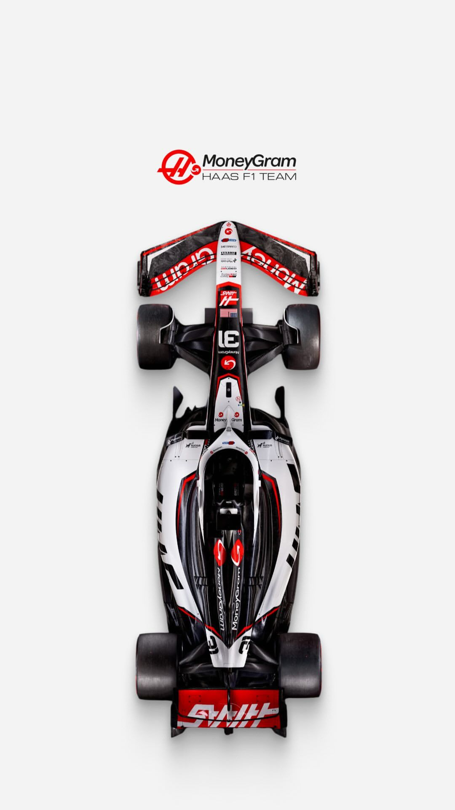
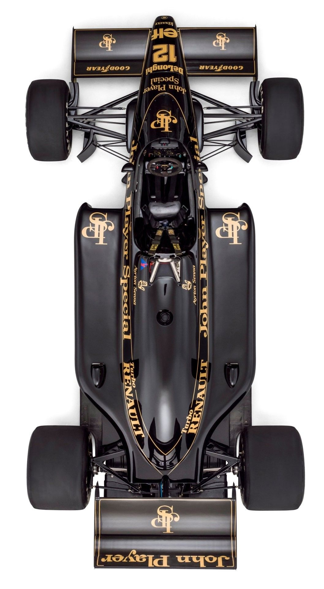
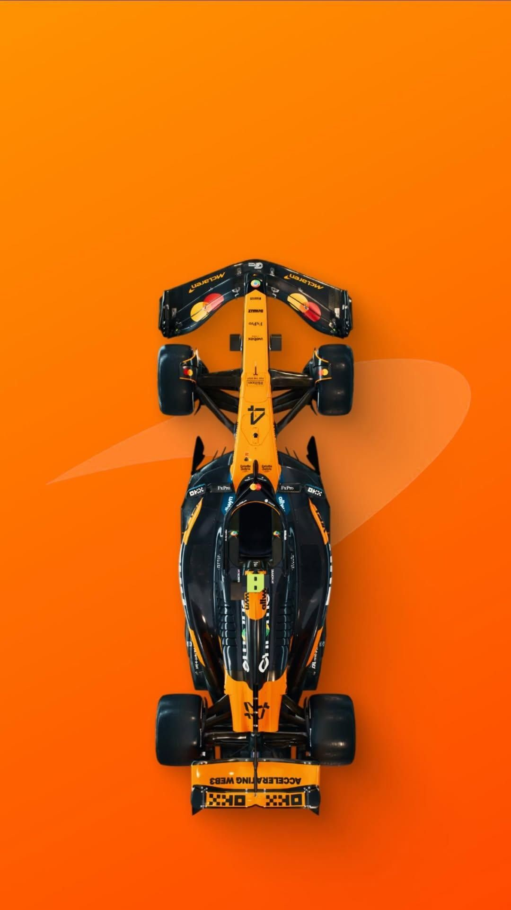The 24 Hours of Le Mans (French: 24 Heures du Mans; French pronunciation: [vɛ̃t.katʁ‿œʁ dy mɑ̃]) is an endurance sports car race held annually near the city of Le Mans, France. First run in 1923, it is the oldest active endurance racing event in the world and is widely considered one of the world's most prestigious races. It is part of the Triple Crown of Motorsport, along with the Monaco Grand Prix and Indianapolis 500, and of the informal Triple Crown of endurance racing, with the 24 Hours of Daytona and 12 Hours of Sebring.
Unlike fixed-distance races whose winner is determined by minimum time, the 24 Hours of Le Mans is won by the car that covers the greatest distance in 24 hours. The cars on this track are able to achieve speeds of 366 km/h (227 mph), and reached 407 km/h (253 mph) on the Mulsanne Straight in 1988 – instigating the addition of more chicanes to the track to reduce speed reached. Racing teams must balance the demands of speed with the cars' ability to run for 24 hours without mechanical failure. The race is organized by the Automobile Club de l'Ouest (ACO). It is held on the Circuit de la Sarthe, composed of closed public roads and dedicated sections of a racing track.
The 24 Hours of Le Mans was often part of the World Sportscar Championship from 1953 until that series' final season in 1992. In 2011, it was a part of the Intercontinental Le Mans Cup. Since 2012, the race has been a part of the FIA World Endurance Championship. A 10-hour American version of the race, called Petit Le Mans, has been held annually since 1998.
 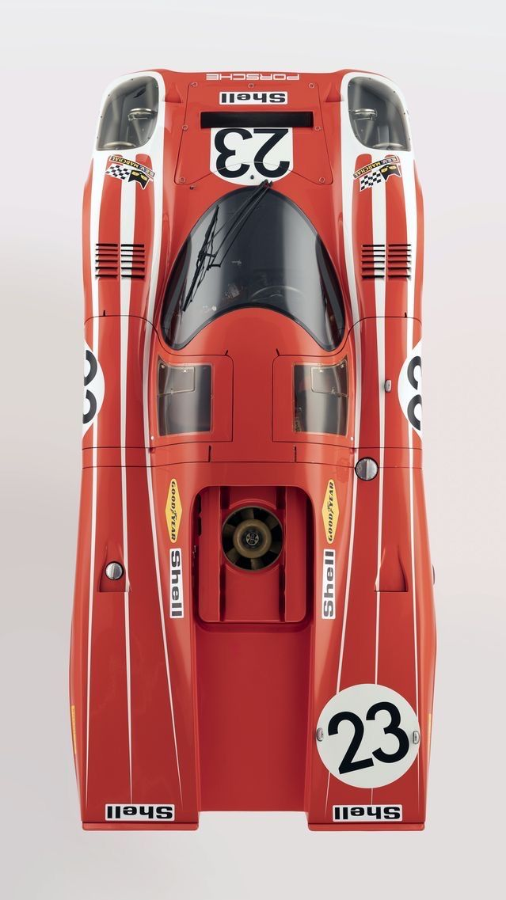
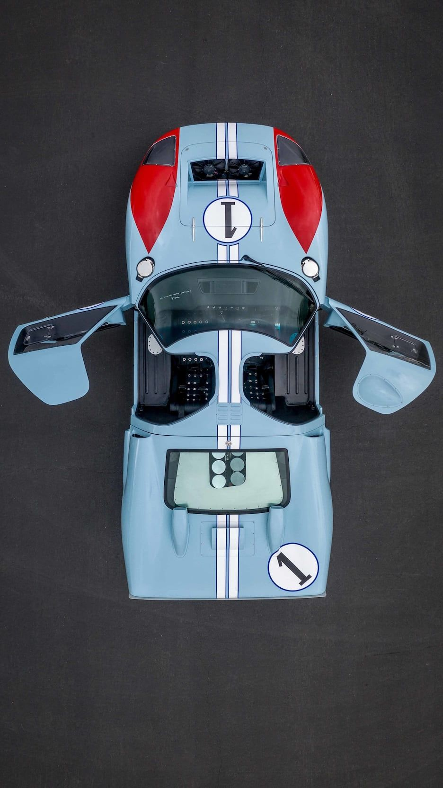
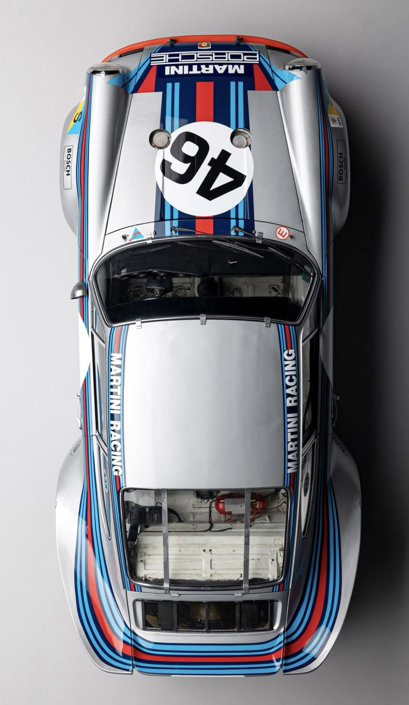
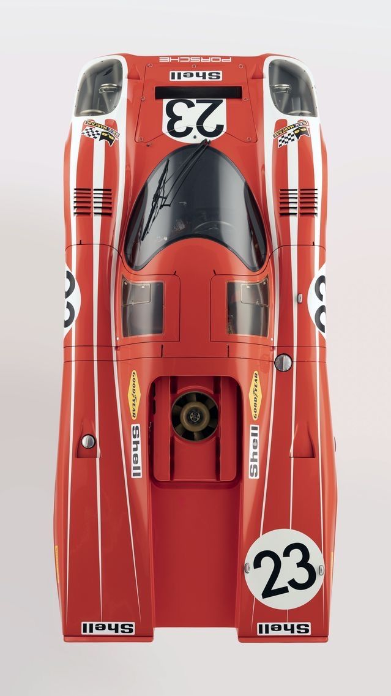
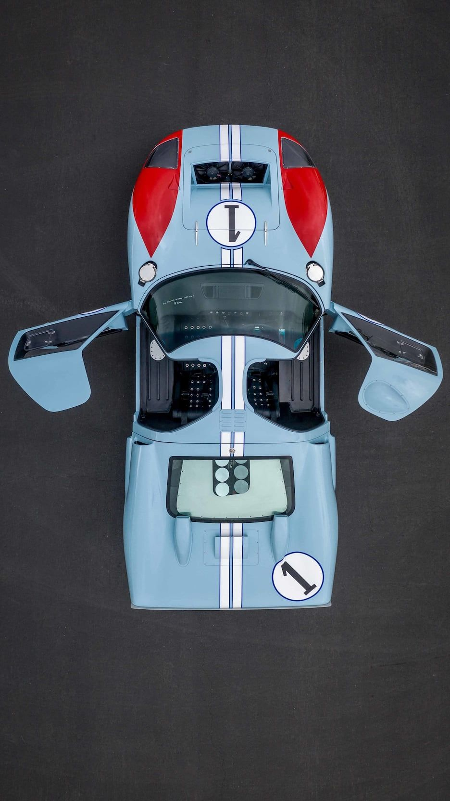
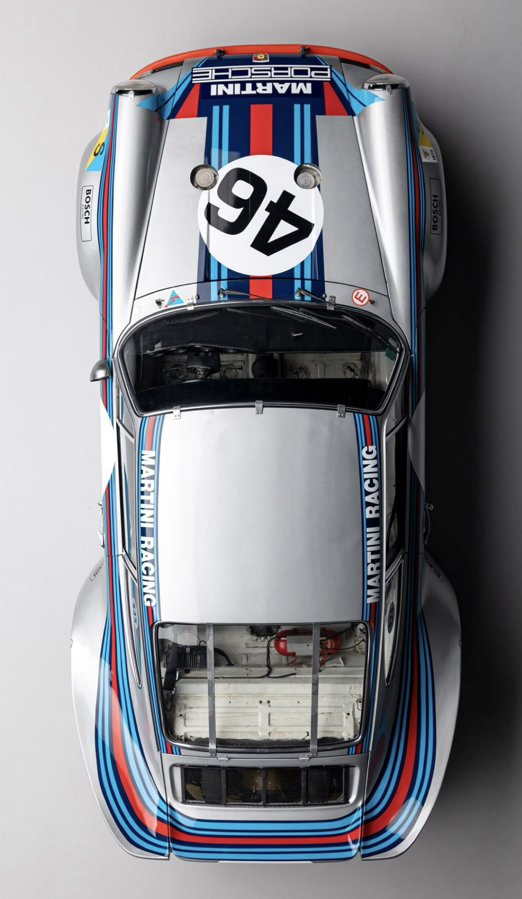